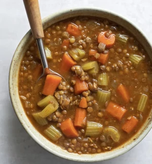

Lentil Soup

Ingredients:
- One pound of green lentils or split lentils
- One yellow onion, diced
- Three large carrots, peeled and diced
- Four celery stalks, diced
- Two large russet potatoes
- Two cups of frozen corn
Spices: * Garlic powder * Onion powder * Thyme * Basil * Oregano * Salt * Pepper * Soy sauce * Two cups vegetable broth
How to make it:
Slow cook for 8-10 hours (lentils takes more time than split lentils). You can also blend things if you want it more soupy.